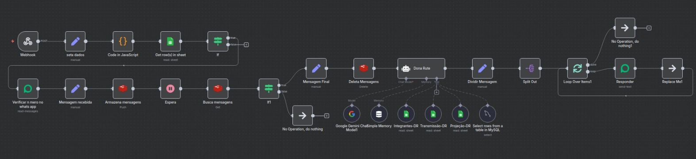
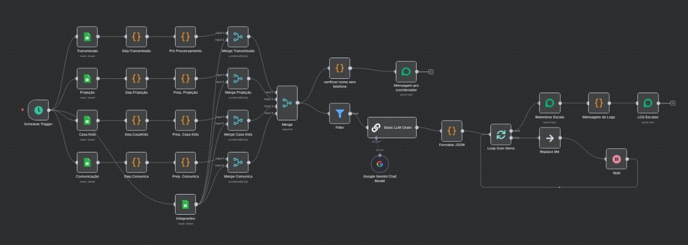
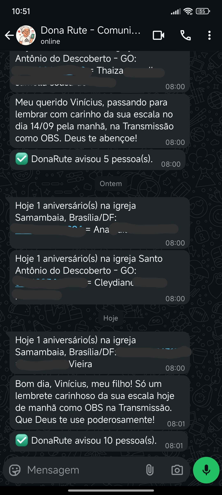

Dona Rute – Assistente Inteligente via WhatsApp
Visão Geral
O Dona Rute é um assistente conversacional criado para organizar a rotina de comunicação
de um ministério com dezenas de voluntários. Integrado ao WhatsApp, ele consulta escalas,
aniversariantes e dados internos em tempo real, envia lembretes automáticos (7 dias antes, 2 dias antes
e no dia), valida permissões de acesso e responde dúvidas usando linguagem natural. Atualmente atende
mais de Dezenas de pessoas diariamente.
O Problema
Antes da automação, havia dificuldade em manter a comunicação organizada: voluntários esqueciam escalas,
coordenadores precisavam avisar manualmente, dúvidas eram repetidas e informações estavam dispersas em
várias fontes, Pastores não sabiam direito os aniversariantes do dia então não conseguiam dar felicitações e etc.
A Solução
O sistema centraliza tudo em um único assistente no WhatsApp com:
- Respostas inteligentes em linguagem natural
- Acesso restrito apenas para voluntários cadastrados
- Lembretes automáticos de escala
- Disparo diário de aniversariantes para líderes e pastores
- Integração total com banco de dados MySQL
- Logs, monitoramento e tratamento de erros
Fluxos e Demonstrações
Demonstração em Vídeo
Fluxo principal – Conversas & IA

Fluxo de lembretes de escala

Exemplos de Mensagens de aniversariantes e Lembretes de Escalas

Arquitetura Técnica
Tecnologias: n8n, MySQL, Redis, Evolution API, Google Sheets, LLM (Gemini)
- n8n para orquestração dos fluxos
- Evolution API para envio e recepção via WhatsApp
- MySQL como banco relacional principal
- Redis para cache e memória da IA
- Google Sheets como fonte auxiliar de dados
Resultados
- Quase zero esquecimentos de escala
- Comunicação totalmente automatizada
- Maior organização entre voluntários e líderes
- Redução de carga operacional para coordenadores
- Respostas rápidas, padronizadas e acessíveis
← Voltar ao Portfólio